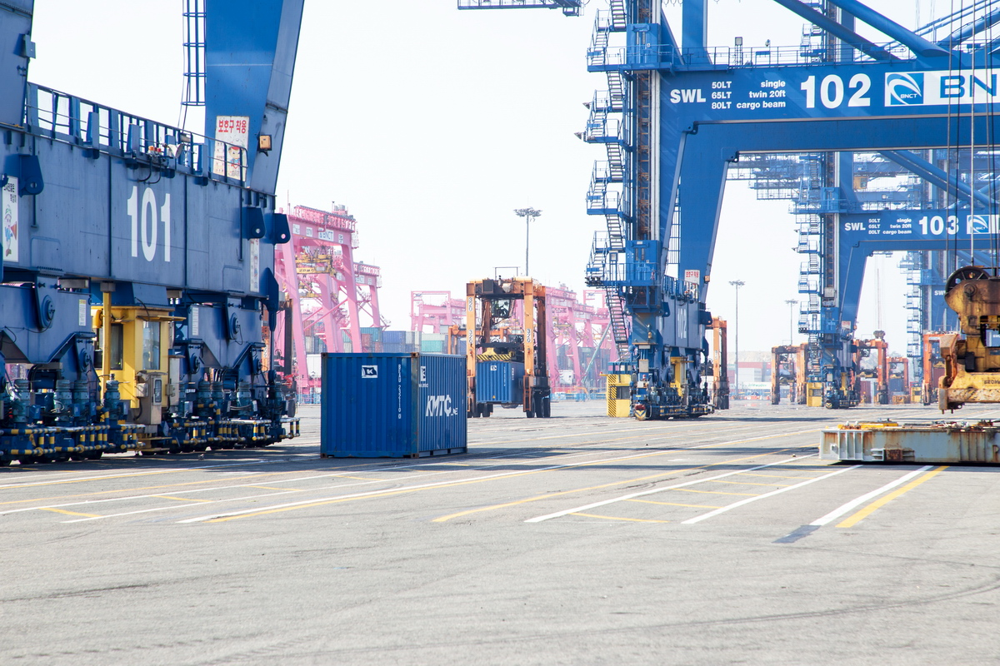

[5극3특 해양주권⑥] 이재명 정부 항만공사 통합, 부산항 빚 4조4121억원 인천에 전가
인천항만공사 21년 만에 부산 본사 '인천지역지사'로 격하
포괄보조금 3조8000억원에서 10조6000억원, 항만 권한은 거꾸로 중앙 집중
부채비율 인천 56.53% 부산 109.00%, 넷 합치면 73.05%로 급등
정부는 항만공사 넷을 하나로 묶겠다며 근거 셋을 들었다. 지역항만 연계 강화와 과당경쟁 억제, 해외 물류거점 공동 조성이다. 셋 다 법인을 합치지 않고도 되는 일이고, 그 가운데 하나는 현행법이 이미 장관에게 맡겨 놓았다.
1. 연계도 경쟁도 법인을 합칠 일이 아니다
항만공사법 제36조의2가 연계를 다룬다. 해양수산부 장관은 공사 사이에 협의가 필요한 사항을 협의하고 조정할 수 있고, 필요하면 관계 공무원과 공사 임직원으로 항만공사운영협의회를 꾸린다. 연계를 강화할 권한은 이미 장관에게 있다.
정부는 그 협의회를 몇 차례 열어 무엇을 조정했는지 밝히지 않았다. 어디서 막혔는지도 발표문에 없다. 도구가 모자랐다는 근거가 나와야 법을 고칠 이유도 선다.
같은 법 제5조 제2항은 지사를 다룬다. 공사는 항만위원회 의결을 거쳐 지사나 분사무소를 둘 수 있으니 지금도 지사는 둘 수 있다. 다만 각 공사가 스스로 두는 지사이고, 정부가 만들려는 지역지사는 본사 지시를 받는다.
과당경쟁 억제는 넷이 같은 화물을 두고 다툰다는 전제에 선다. 인천항은 경인경제권과 대중국 교역, 부산항은 컨테이너 환적이 주력이다. 울산항은 원유와 석유화학, 여수광양항은 제철과 석유화학이다. 화물이 다르면 다투는 자리도 다르다.
해외 물류거점 공동 조성도 마찬가지다. 전산 공동개발과 해외 마케팅은 법인을 합치지 않고도 된다. 2011년 국회예산정책처 연구도 통합의 예산절감 효과가 크지 않다고 분석했다.
2. 부산 빚 4조4121억원이 인천으로 온다
정부 발표문에 없는 것이 통합 뒤 재무다. 부산항만공사 부채총계는 2021년 3조883억원에서 2025년 4조4121억원으로 늘었다. 부채비율도 78.22%에서 109.00%로 뛰었다. 넷 가운데 부채가 자본을 넘어선 곳은 부산뿐이다.
빚을 키운 것은 국책사업이다. 부산항 신항 컨테이너 부두를 짓고 북항을 재개발했으며 총사업비 12조6000억원짜리 진해신항도 벌였다. 사업을 이어 가며 외부 차입이 늘었다.
인천항만공사는 반대로 갔다. 부채총계가 2023년 1조4618억원에서 2025년 1조3327억원으로 줄었고 부채비율도 67.10%에서 56.53%로 낮아졌다. 송도 9공구 골든하버 용지를 단계적으로 판 결과다.
울산항만공사는 부채총계 980억원에 부채비율 12.90%로 가장 안정적이다. 여수광양항만공사는 40.65%다. 2012여수세계박람회재단 부채를 넘겨받았고 포스코와 벌인 소송에서 졌다. 2024년과 2025년에는 잇달아 영업손실을 냈다.
부산을 빼고 셋만 합치면 부채비율이 43.92%인데 부산을 넣어 넷을 합치면 73.05%로 뛴다. 부산 한 곳 부채가 나머지 셋을 합친 2조1948억원의 두 배가 넘어서다. 빚을 줄여 온 곳과 늘려 온 곳이 한 장부에 들어가면 줄인 쪽이 손해를 본다.
3. 해수부도 부산, 통합 본사도 부산
해양수산부는 2025년 12월 8일 세종에서 부산으로 짐을 옮기기 시작해 21일 이사를 마치고 23일 부산 동구 청사에서 개청식을 열었다. 해양 정책을 정하는 자리가 부산으로 간 지 아홉 달 만에 이번 통합안이 나왔다.
통합 본사까지 부산에 선다면 정책과 기획, 예산 권한이 한 도시에 모인다. 2005년 문을 연 인천항만공사는 스물한 해 만에 법인 자격을 잃고 부산 본사가 거느리는 인천지역지사가 된다. 인천항에 다음 부두를 지을지는 부산에 앉은 본사가 정한다.
돈은 이미 기울었다. 지난 5년 정부 항만 재정투자는 부산항에서 83.6% 늘고 인천항에서는 65.4% 줄었다. 2026년도 항만 인프라 확충 예산 1조6600억원을 어디에 넣을지도 통합 본사가 정한다.
4. 세계 항만은 도시로 권한을 내렸다
항만공사 넷의 노동조합은 이 통합을 중앙집권적 퇴행이라 불렀다. 세계 주요 항만은 지역 배후경제권을 바탕으로 독립 경영을 하는데 그 흐름에 역행한다는 것이다.
국회예산정책처가 2011년에 낸 보고서에 근거가 있다. 이 보고서는 항만 운영을 유형으로 가르면서 지자체가 소유하고 운영하는 방식을 따로 세웠다. 그 자리에 일본 도쿄와 오사카, 벨기에 앤트워프, 미국 시애틀이 놓였다.
항만을 도시가 쥐는 것은 예외가 아니라 하나의 표준이다. 그 유형 어디에도 한 나라가 항만공사를 하나만 두는 방식은 없다. 이번 통합안이 향하는 곳은 앞서간 나라들이 이미 지나온 자리다.
5. 지방에 예산은 세 배, 항만 권한은 거꾸로
정부는 5극3특 국가균형성장을 내걸었다. 지방시대위원회가 2025년 9월 30일 그 설계도를 의결했다. 5극은 경인경제권과 충청권, 광주·전남권, 대구·경북권, 부산·울산·경남권이고 3특은 제주와 강원, 전북 특별자치도다.
돈도 그쪽으로 갔다. 지방이 자율로 쓰는 포괄보조금은 2025년 3조8000억원에서 2026년 10조6000억원으로 늘었다. 국회는 2026년 5월 7일 지방분권균형발전법 개정안을 의결해 균형성장영향평가를 새로 넣었다. 초광역 협력사업을 뒷받침할 초광역특별계정도 2027년 1월 1일부터 둔다.
한쪽에서는 지방에 쓸 돈과 권한을 내린다. 다른 쪽에서는 항만마다 쥐고 있던 권한을 본사로 올린다. 2003년 항만공사법을 만들며 항만별로 공사를 세운 선택을 스물세 해 만에 되돌리는 일이다.
절차도 거꾸로 갔다. 정부는 노동조합과 협의를 이어 가던 도중 통합 방안을 발표했다. 인천항만공사 노동조합 투표에서는 참여 조합원 96.35%가 반대했고, 노동조합이 요구한 비용편익 분석 결과를 정부는 내놓지 않았다.
정부는 연말까지 로드맵을 만들고 2027년부터 시행하겠다고 했다. 초광역특별계정이 서는 바로 그해에 항만 권한은 중앙으로 올라간다. 통합을 먼저 정하고 계획은 뒤에 만드는 순서다. 무엇이 얼마나 좋아지는지 숫자로 보이지 않은 채 국회에 법을 고쳐 달라고 요구한다.



참고문헌
가. 공식 발표자료와 법령
·재정경제부(2026), "공공기관 기능개혁 추진방안", 2026.09.03. 항만공사 4곳을 가칭 한국항만공사로 통합, 정책·기획·예산 권한 본사 집중, 기존 공사 4곳 지역지사 전환, 2027년부터 단계 시행. https://mofe.go.kr/?menuNo=7070000&searchBbsId=MOSFBBS_000000000059&searchNttId=MOSF_000000000028215
·「항만공사법」 제5조 제2항, 제36조의2, 국가법령정보센터. 제5조 제2항 지사·분사무소 설치, 제36조의2 항만공사운영협의회 구성·운영. https://www.law.go.kr/LSW/lsInfoP.do?lsiSeq=152082
·해양수산부(2025), "해양수산부 부산 이전 시작", 2025.12. 12월 8일 이사 시작, 21일 완료. https://www.mof.go.kr/doc/ko/selectDoc.do?docSeq=64070&bbsSeq=10&menuSeq=971
·해양수산부(2025), "2026년도 해양수산부 예산 7조3566억원 확정", 2025.12.03. 항만 인프라 확충 1조6600억원. https://www.mof.go.kr/doc/ko/selectDoc.do?docSeq=64021&menuSeq=971&bbsSeq=10
·지방시대위원회(2025), "수도권 일극에서 '5극3특'으로, 대한민국 성장지도 바뀐다", 2025.09.30. 5극3특 국가균형성장 추진전략 설계도 3대 분야 11개 전략과제 144개 세부과제 의결. https://eiec.kdi.re.kr/policy/materialView.do?num=271787
·지방시대위원회(2025), "'권역별 성장엔진' 발굴 본격화…5극3특 국가균형성장 이끈다", 대한민국 정책브리핑, 2025.12.08. 포괄보조금 2025년 3조8000억원에서 2026년 10조6000억원으로 확대. https://www.korea.kr/news/policyNewsView.do?newsId=148956047
·행정안전부(2026), "5극3특 균형성장 본격 추진 기반 마련, '지방분권균형발전법' 개정안 국회 통과", 2026.05. 「지방자치분권 및 지역균형발전에 관한 특별법」 개정안 2026.05.07 국회 본회의 의결. 균형성장영향평가 도입, 초광역특별계정 신설(2027.01.01 적용), 초광역특별협약과 초광역추진조정기구 신설. https://www.mois.go.kr/frt/bbs/type010/commonSelectBoardArticle.do?bbsId=BBSMSTR_000000000008&nttId=125831
·"'5극 3특' 균형성장 본격화…초광역 협력 기반 담은 특별법 국회 통과", 대한민국 정책브리핑, 2026.05.08. 위 보도자료 교차 확인. https://www.korea.kr/news/policyNewsView.do?newsId=148964072
·「지방자치분권 및 지역균형발전에 관한 특별법」, 국가법령정보센터. 법률 정식 명칭 확인. https://www.law.go.kr/LSW/lsInfoP.do?lsiSeq=252297
나. 연구보고서
·정유훈·안태훈(2011), 『항만공사 운영의 문제점과 개선과제』, 국회예산정책처 사업평가현안분석 제31호. 항만 운영 유형 분류와 지자체소유 운영제 사례, 통합의 예산절감 효과 분석. https://www.nabo.go.kr/board/file/bulkDown.do?idx=3261&bid=19
다. 언론보도
·이종선(2026), "항만공사 통합 시 부산항 '4.4조 빚더미' 인천·울산·여수광양에 전가", 『인천투데이』, 2026.07.30. 4개 항만공사 재무공시 분석. https://www.incheontoday.com/news/articleView.html?idxno=321779
·이종선·인투아이(2026), "졸속 항만 통폐합 후폭풍…인천 여야·노조·시민사회 저항 잇따라", 『인천투데이』, 2026.09.03. 노조 찬반투표 96.35%, 비용편익 분석 공개 요구. https://www.incheontoday.com/news/articleView.html?idxno=323178
·김도윤(2026), "공항 통합엔 대통령 면담, 항만 통합엔 '검토 중'…인천시 대응 '온도차'", 『인천투데이』, 2026.09.07. https://www.incheontoday.com/news/articleView.html?idxno=323299
#5극3특해양주권 #항만공사통합 #인천항만공사 #부산항만공사 #부산몰아주기 #독립채산제 #항만공사법 #항만공사운영협의회 #포괄보조금 #해양분권
[연재 차례]
①인천 안쪽 경계 ②남북 경계 확정 ③남북 공동 대중국 ④김대중 구상 노무현 설립
⑤LH 분리 PA 통합 민심 ⑥부산항 빚 4조4121억원 인천에 전가